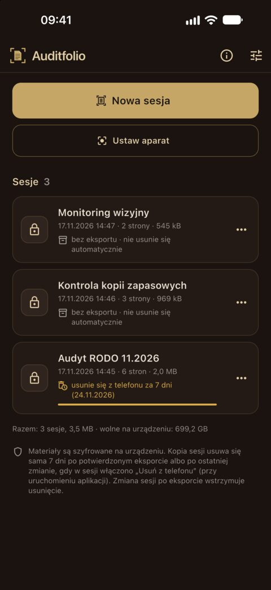
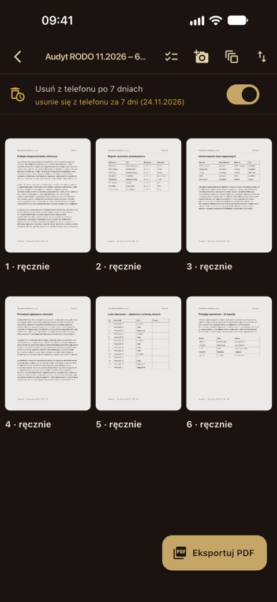
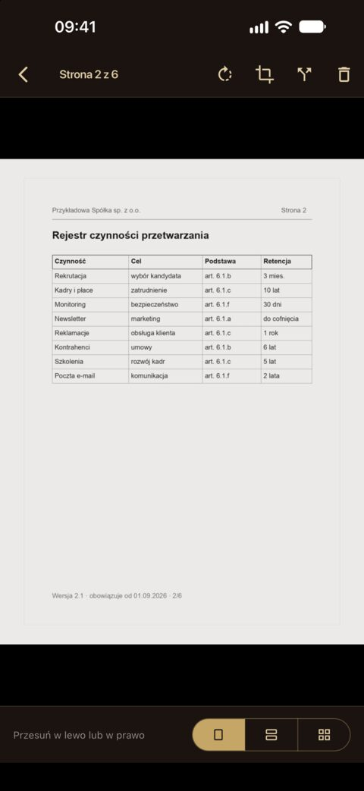
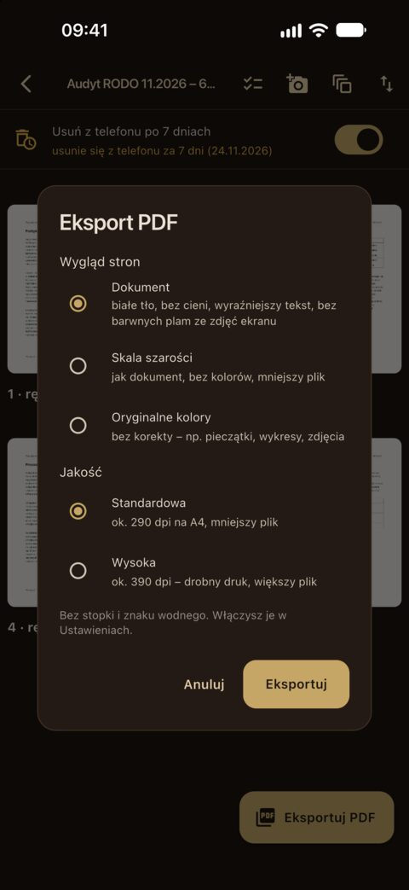

Instrukcja obsługi
Auditfolio zbiera dokumenty podczas audytu: papierowe strony i to, co ktoś pokazuje na ekranie. Zdjęcia zostają zaszyfrowane na urządzeniu, a na koniec powstaje przeszukiwalny PDF.
Zanim zaczniesz
Przy pierwszym zdjęciu aplikacja poprosi o dostęp do aparatu. Otwarcie zapisanej sesji wymaga Face ID, Touch ID albo kodu urządzenia.
Przycisk „Ustaw aparat” na ekranie głównym pomaga dobrać odległość i światło. Wskaźniki ostrości, odblasku, dokumentu i bezruchu robią się zielone, gdy kadr jest dobry. Na tym ekranie nic się nie zapisuje.
Nowa sesja
Stuknij „Nowa sesja” i wpisz nazwę, na przykład klienta i datę. Ta nazwa trafi do nazwy pliku PDF.
„Zdjęcia automatyczne” decyduje, czy aplikacja sama robi zdjęcia. Po wyłączeniu zdjęcie robisz wyłącznie przyciskiem „Ręcznie”. „Najwyższa jakość zdjęć” daje więcej szczegółów, ale każde zdjęcie trwa dłużej. Zmienisz to też w trakcie przyciskiem „HQ”.

Fotografowanie
W trybie automatycznym trzymaj telefon nad dokumentem i przekładaj kartki. Aplikacja czeka, aż obraz się uspokoi i będzie ostry, a zapis potwierdza krótkim błyskiem z numerem strony. Strona bardzo podobna do poprzedniej zostaje zapisana z oznaczeniem do sprawdzenia.
Dokument na ekranie przewijaj powoli, tak żeby kolejne zdjęcia miały wspólny fragment. Jeśli go zabraknie, przegląd pokaże możliwą lukę.
Na dole są przyciski „Pauza”, „Ręcznie” i „Zakończ” oraz przełącznik „Auto”. „Wykryj kartkę” liczy ramkę dokumentu od nowa, na przykład po zmianie kartki na mniejszą.
Przegląd stron
Po stuknięciu „Zakończ” widzisz miniatury. Pod miniaturą są oznaczenia, takie jak „podobna do poprzedniej”, „może być nieostra” czy brak wspólnego fragmentu.
Stuknij stronę, żeby ją powiększyć. Tam możesz ją obrócić, poprawić kadr (narożniki, „Automatycznie” albo „Całe zdjęcie”), zacząć od niej nowy dokument albo ją usunąć. Nowy dokument oznacza, że eksport utworzy osobny plik PDF.
Na górze przeglądu są: zaznaczanie kilku stron do usunięcia, „Dołóż strony” (aparat w trybie ręcznym), „Znajdź powtórzenia” i „Kolejność stron”, gdzie przytrzymujesz stronę i przeciągasz ją na nowe miejsce.


Eksport PDF
Stuknij „Eksportuj PDF” i wybierz wygląd stron: „Dokument” (białe tło, wyraźny tekst), „Skala szarości” albo „Oryginalne kolory”, gdy liczą się pieczątki, wykresy czy zdjęcia. Jakość standardowa to około 290 dpi na A4, wysoka około 390 dpi.
PDF dostaje niewidoczną warstwę tekstu rozpoznanego na urządzeniu (polski i angielski), więc da się w nim wyszukiwać. Gotowy plik zapisujesz albo wysyłasz przez systemowy arkusz udostępniania, na przykład „Zachowaj w Plikach”.
Po zapisie aplikacja pyta, czy sprawdziłeś PDF. Dopiero potwierdzenie uruchamia odliczanie do usunięcia sesji z telefonu.
W „Ustawieniach” włączysz szyfrowanie PDF losowym hasłem, stopkę z nazwą sesji, numerem strony i datą oraz znak wodny. Hasło zobaczysz w sesji i w menu ⋯ na liście sesji. Przekaż je innym kanałem niż plik, na przykład SMS-em.

Przechowywanie i usuwanie
Zdjęcia i nazwy sesji są zaszyfrowane na urządzeniu. Nie trafiają do galerii ani do kopii zapasowej iCloud.
Po potwierdzonym eksporcie sesja usuwa się z telefonu sama po 7 dniach. Przełącznik „Usuń z telefonu po 7 dniach” w przeglądzie sesji włącza to samo także bez eksportu; wtedy termin liczy się od ostatniej zmiany. Każda zmiana sesji po eksporcie wstrzymuje usunięcie.
Lista sesji pokazuje, kiedy która sesja zniknie. Sesję możesz też usunąć od razu z menu ⋯ na liście. Wyeksportowane pliki PDF zostają tam, gdzie je zapisano.
Dowody z audytu
ISO 19011 traktuje jako dowód z audytu zapisy, stwierdzenia faktów albo inne informacje związane z kryteriami audytu, które da się zweryfikować. Zdjęcie strony pozwala później pokazać, na czym oparłeś ustalenie, zamiast odtwarzać je z pamięci.
Fotografowanie dokumentów i ekranów uzgodnij z audytowanym przy planowaniu audytu. Nazwij sesję tak, żeby było jasne, czego dotyczy, a w eksporcie włącz stopkę z nazwą sesji, numerem strony i datą.
Przykładowy zapis w planie audytu: „Za zgodą audytowanego audytor może fotografować okazane dokumenty i ekrany wyłącznie w celu udokumentowania dowodów z audytu. Zdjęcia są przechowywane w postaci zaszyfrowanej, dostępne tylko dla zespołu audytowego i usuwane z urządzenia po przeniesieniu do dokumentacji audytu. Audytowany może wyłączyć z fotografowania wskazane materiały.” Potwierdź to na spotkaniu otwierającym.
Ta sama norma zaleca audytorowi dyskrecję i ochronę informacji zebranych podczas audytu. Dlatego zdjęcia są zaszyfrowane, nie trafiają do chmury, a po przeniesieniu PDF do dokumentacji audytu sesja może sama zniknąć z telefonu.
Zgłoś błąd albo pomysł
Napisz na adres poniżej. Przy błędzie podaj model urządzenia, wersję iOS, wersję aplikacji (ekran „Informacje”) i kroki, które do niego prowadzą.
Nie dołączaj zdjęć dokumentów ani danych osobowych. Jeśli zrzut ekranu jest potrzebny, zrób go na przykładowym dokumencie.